最近我大概每周、最多十天就要往户外跑一趟。深圳的网红山已经打卡了五六座，国庆前 9 月 30 号还去爬了趟武功山——好吧，我承认，我入坑了。山爬得差不多，这次换个口味走徒步路线，一上来就挑了深圳的顶流：东西涌穿越。
前一天照着攻略做功课，攻略里的高频词只有一个：暴晒。于是防晒衣、防晒霜安排上，水、饮料、零食备齐，四个人整整齐齐出发。先说一句：以下全是原片，没滤镜，海就是这么蓝。
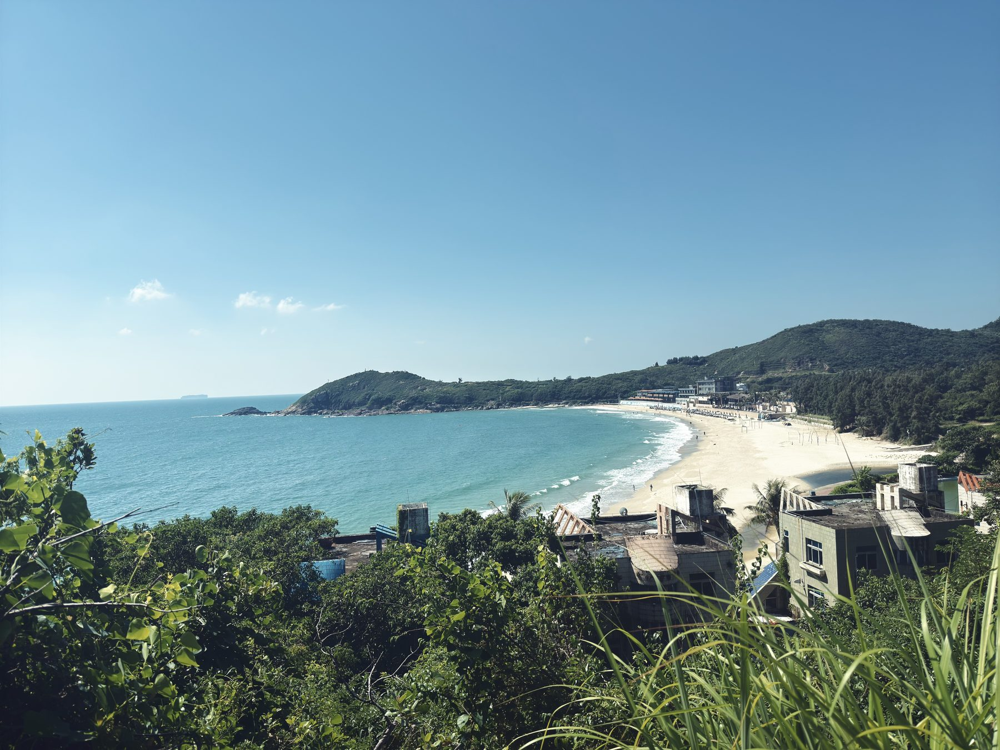
还没正式开走，就先拍了一轮
往上走一小段，回头就是这个画面：白沙滩、小村屋、一整湾透明的绿。
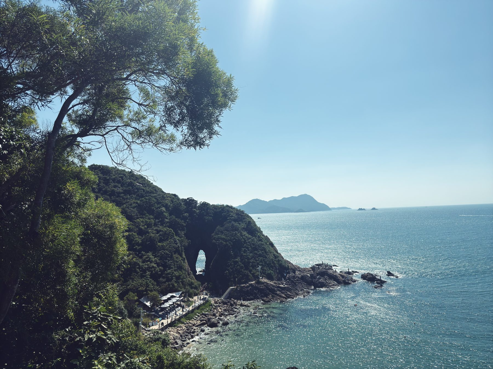
深圳版“圣象天门”
中途专门绕去了网红点：山岬上被海浪硬生生冲出来的一个大洞。我一直以为它叫“橡皮岩”，回来一查才知道正名叫穿鼻岩，因为洞口像鼻孔，还有个外号叫“生命之门”。来回大概两公里，就为了这一张。
📖 参考资料：穿鼻岩是海蚀拱洞，高约 18 米、宽 9 米、深 46 米，在东涌沙滩东北侧约 500 米的海角。观景台附近落石多，别翻围栏凑近洞口；涨潮时走沙滩那条线可能过不去。
“东西涌”三个字，不拍等于白来
海边插着好几块彩色的“东西涌”字牌。队友直接爬上大石头摆 pose，我站在“祖国万岁 · 东西涌”的牌子下面，拍了张标准游客照。
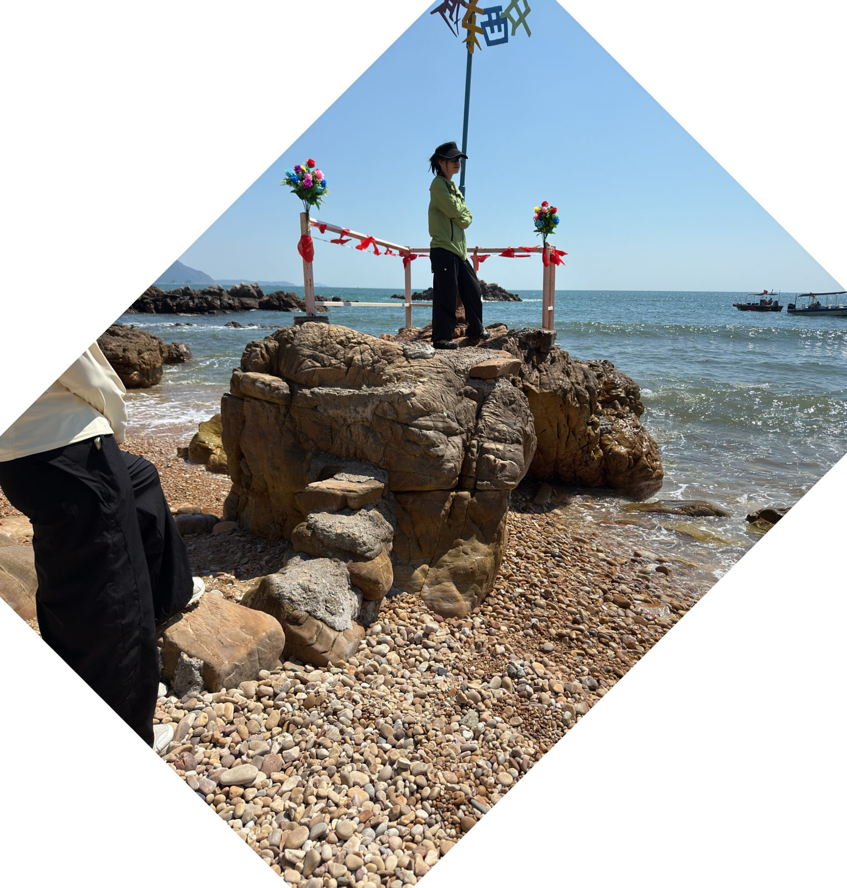
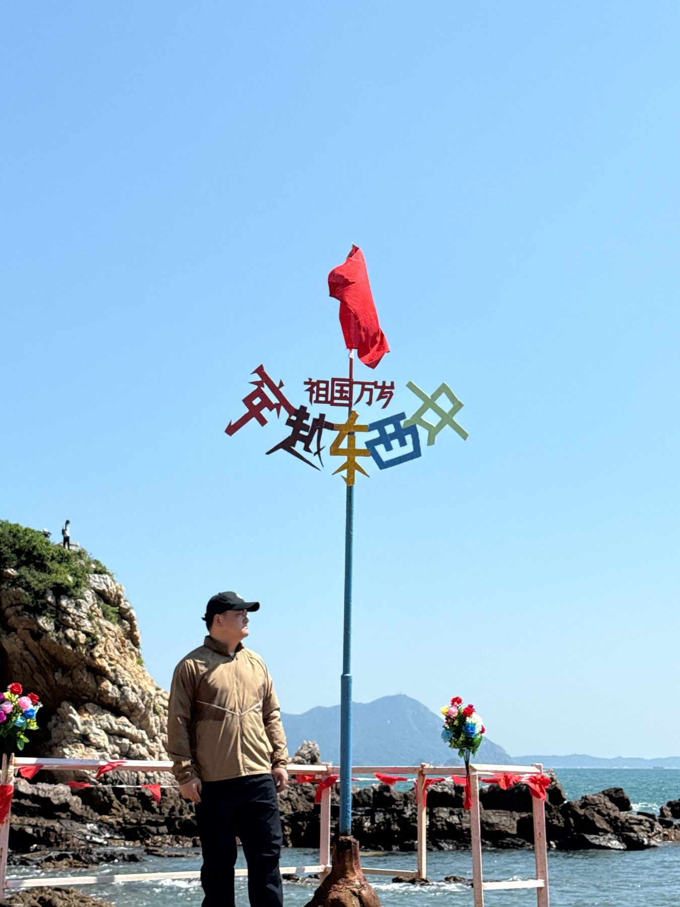
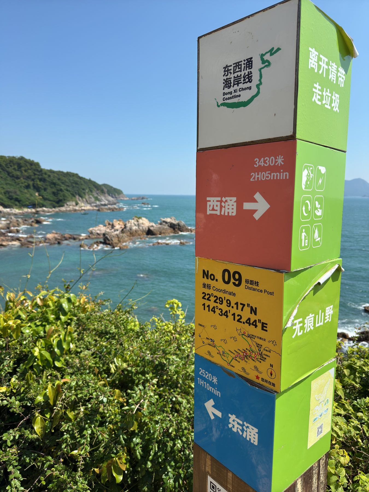
一根路牌，把账算得明明白白
半路碰到一根很贴心的路牌 No.09：往西涌 3430 米，约 2 小时 05 分；往东涌 2520 米，约 1 小时 10 分。两边一加，全程约 5.95 公里。
路牌最底下还写着四个字：无痕山野。意思是：风景随便拍，垃圾自己带走。
手脚并用，边爬边拍
这条线主打一个原生态：没有整齐的台阶，只有乱石滩、礁石和峭壁。大部分时间在石头上找落脚点，陡的地方就拉着铁链下坡，还要从两块巨石中间的缝里钻过去。运动量说大不大，但手和脚一个都闲不下来。
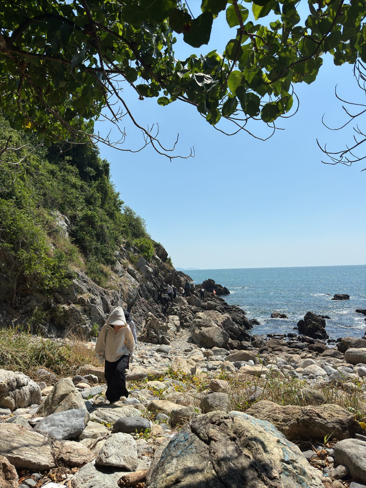
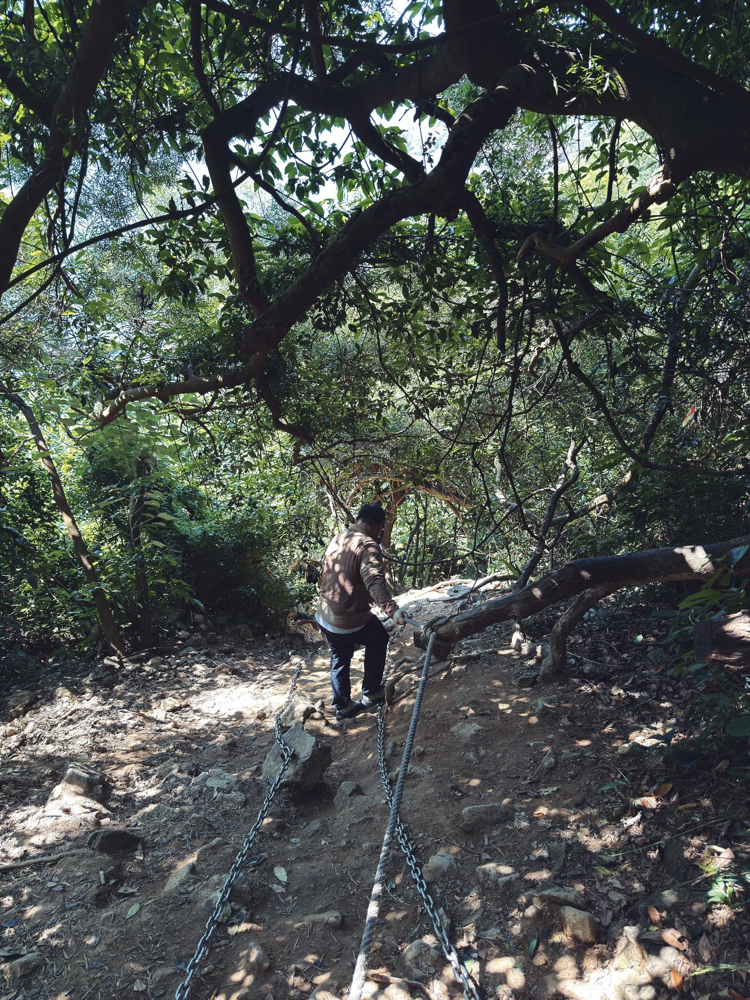
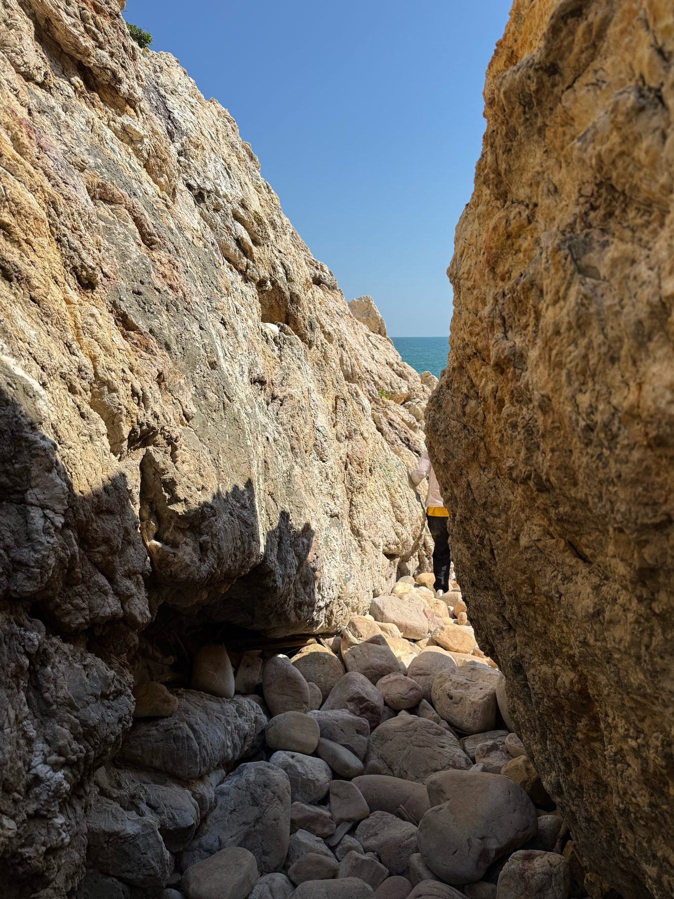
最陡的路，最好的秩序
攀岩铁链那几段是真的陡，也是真的有点危险。网红路线人又多，岩壁上挂了一长串人排队。但让我挺意外的是，大家特别守秩序：没人推搡，没人抢道，前面的人回头拉一把，后面的人在底下扶一下。一条铁链上挂满了人，愣是排出了一种文明礼让的气质，必须点个赞。
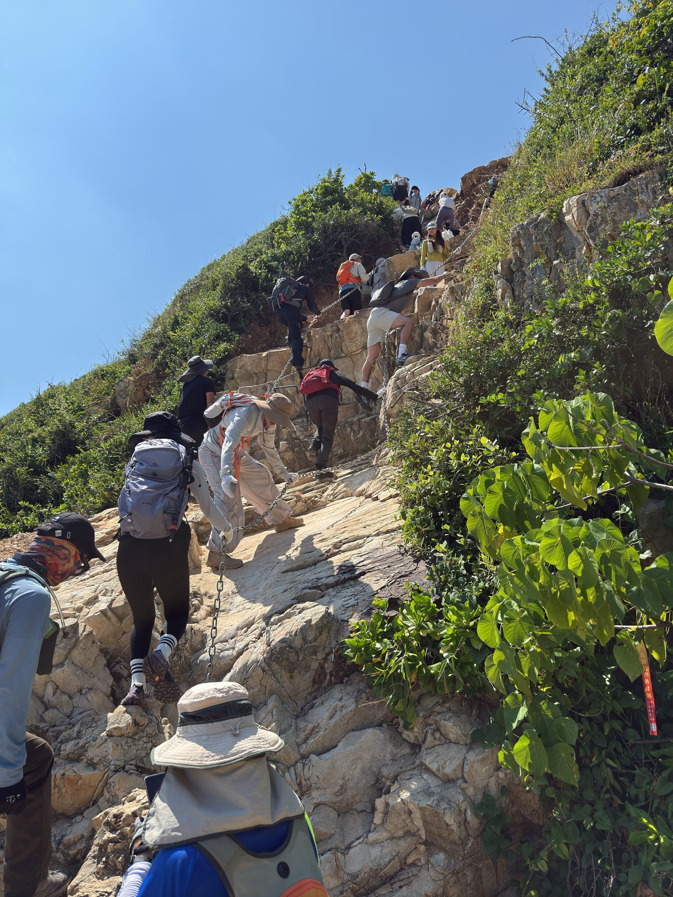
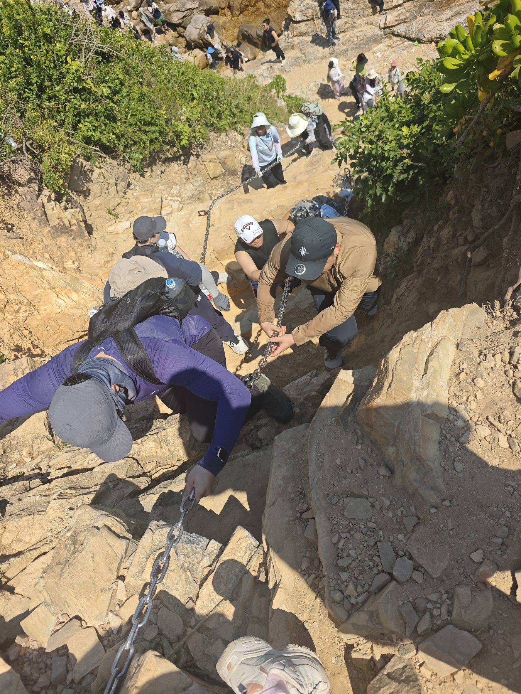
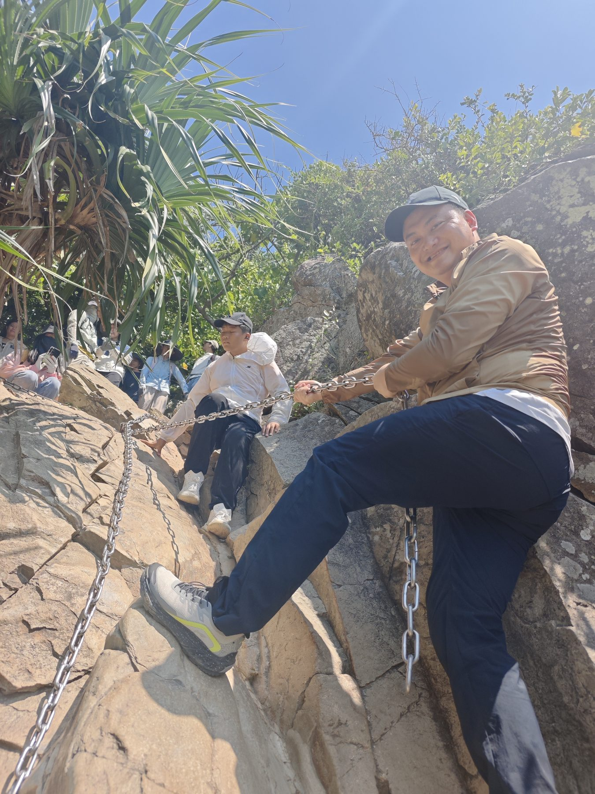
岩壁上排队的人 · 从上往下拍才知道有多陡 · 累归累，我还笑得出来
闺蜜：回去就跟她“分手”
路上碰到一个从广州来的公司团建团。我们在一块岩石上歇脚的时候，旁边有个二十来岁的妹子，平时估计不怎么运动，心肺完全跟不上，累得不行。
她同事轮流给她打气，她闺蜜在旁边开玩笑：“好不容易把她拉出来徒步一次，回去估计要跟我闹掰、‘分手’了。”一圈人都笑了，然后一路互相开玩笑、一路鼓励，硬是陪着她把这段穿越走完了。
风景是一回事，路上碰到的这些人和事，有时候比风景还让人记得住。
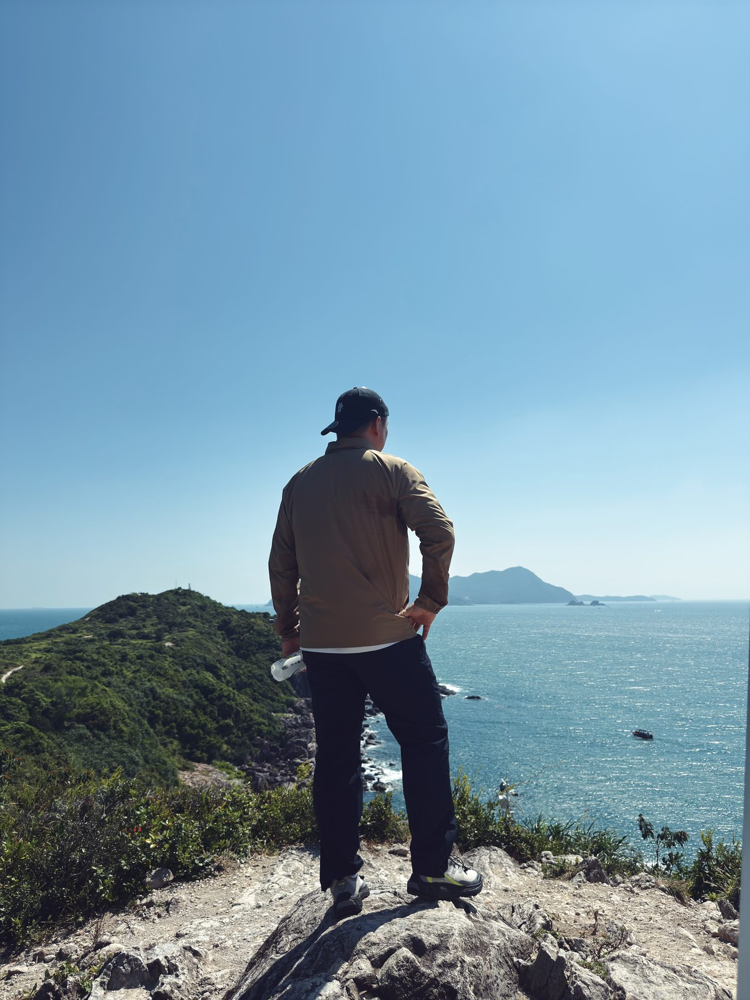
走到天文台，坐游艇回东涌
这一路真的太出片了，基本是走十分钟、拍五分钟的节奏，所以早上十点出发，下午三四点才晃到西涌天文台。
回程没走回头路，直接坐游艇回东涌。刚刚一步一步爬过的海岸线，坐船十几分钟就从眼前划过去了，心情有点复杂。
风景不会躺在家里等你，
— 写给走完东西涌的自己
它在你挺过去的那段路后面。
在路上，才能捡到的东西
说实话，旅行也好，徒步也好，过程本身挺枯燥、挺单调的，有时候还很痛苦：晒、累、腿软，还得排队爬铁链。但只要挺过去，前面就有好风景等着，身边还会冒出来各种有趣的人和事，比如互相扶一把的路人，比如嚷着要“分手”的闺蜜。
很多道理，就是在路上一步一步走着走着才想明白的。这些灵感和美好，躺在家里怎么都得不到，只有真的走在路上，才能感受到这种快乐。
东西涌这条线：强度中等，风景满分，推荐。下一条去哪，已经在看了。
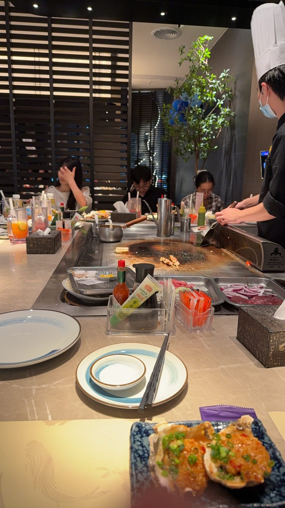
辛苦一天的奖励
走了一天、晒了一天、爬了一天，收工当然要犒劳一下自己：铁板烧安排上。今天出的汗，靠这一顿全补回来了。